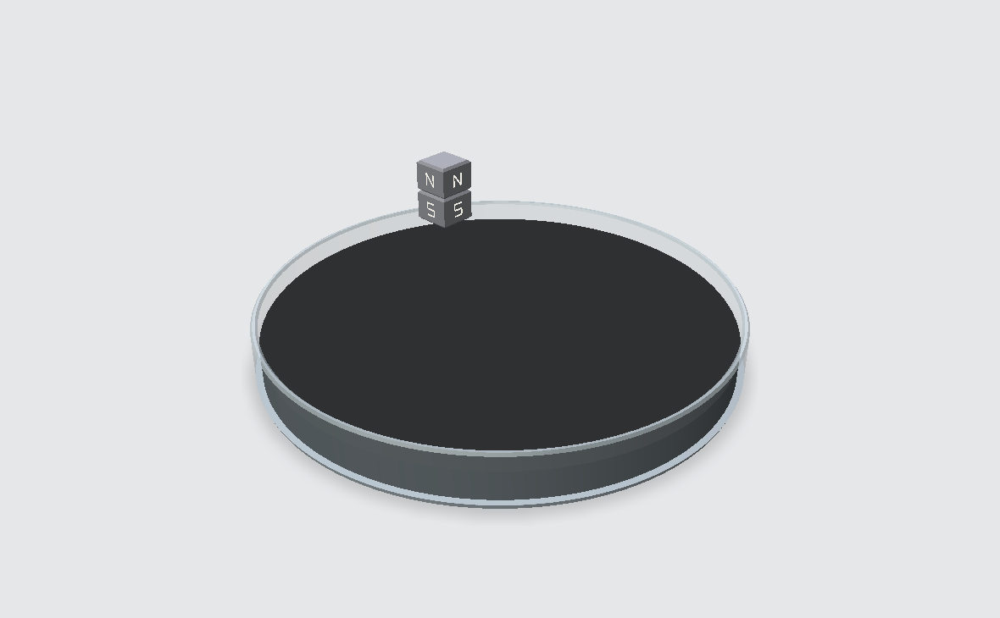
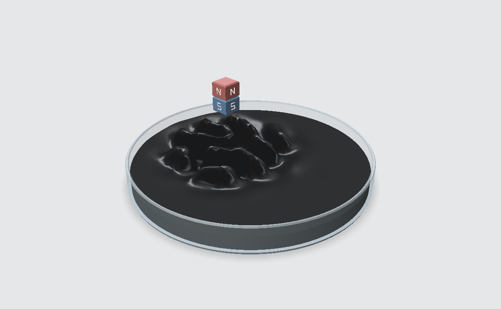
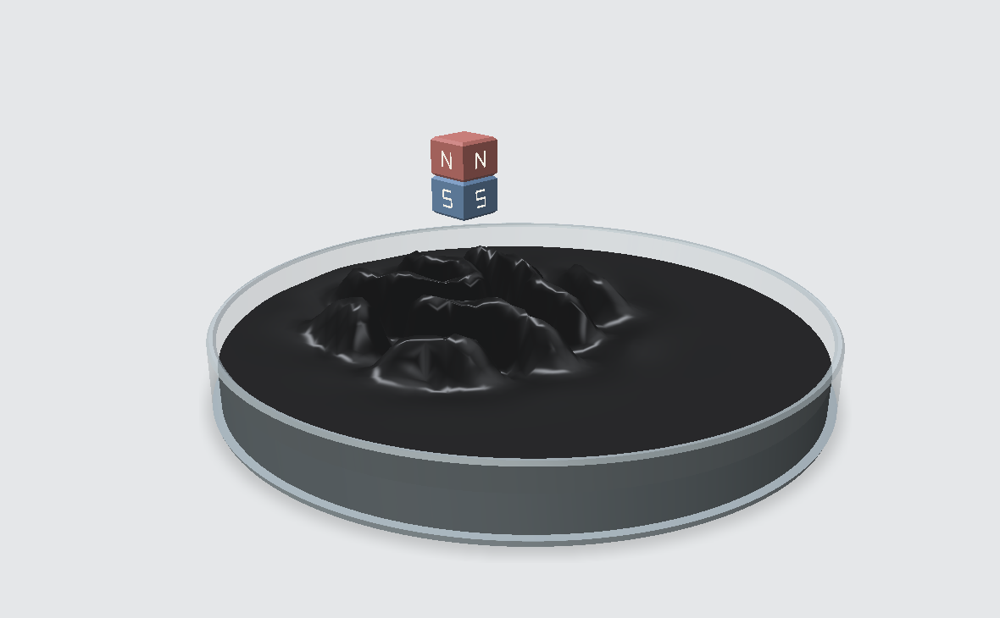
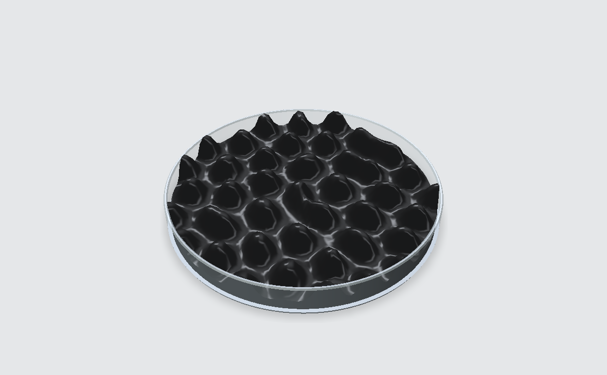
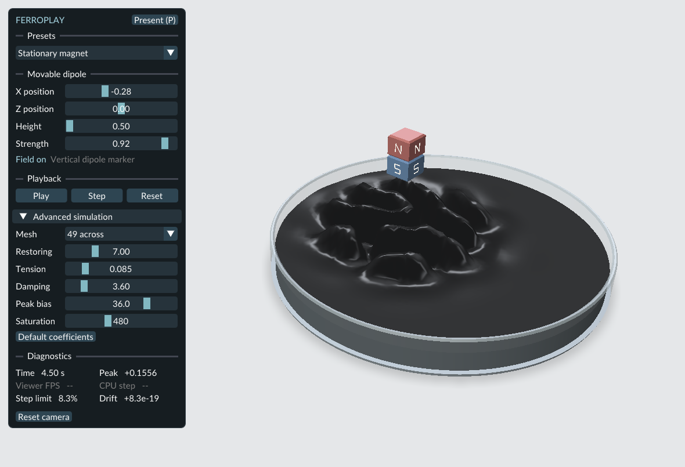

FerroPlay: Interactive Magnetic Fluid Simulation
CS 184 Final Project Milestone
Team Members: Cici Cai, Ian Meng Si, Stephanie Yao, William Xu
1. Introduction and Progress Summary
We built FerroPlay to explore how magnet position and strength change a ferrofluid surface. For the milestone, we built an interactive prototype with a transparent circular dish and one virtual magnet that users can move and adjust. A strong field creates a cluster of peaks near the magnet, and the surface settles when the field is turned off.
2. Research Results
Cowley and Rosensweig showed that a vertical magnetic field can turn small disturbances in a ferrofluid surface into peaks. Their analysis explains why gravity and surface tension suppress different ripple sizes, while the magnetic field can amplify a band of sizes between them. Cowley and Rosensweig (1967)
Based on this, we modelled the liquid surface by tracking its height h and vertical velocity v at each point on a circular mesh. Height is measured relative to the flat resting surface. The first equation combines the effects that push the surface up or down.
A(h) = −gh − cLh + F + R(h)
The gravity-like term (−gh) pulls raised areas down and pushes dips back up. The surface-tension term (−cLh) smooths bumps and dips, with L measuring how each point’s height differs from its neighbors. The coefficients g and c set the strength of these effects. The magnetic term F lifts the liquid and can amplify ripples near the magnet. The floor term R(h) pushes deep dips upward as they approach the bottom of the dish.
The solver applies damping to slow the motion and advances by 1/240 of a simulated second. At each step, it removes the area-weighted mean from the updated velocity, then advances the height and removes its area-weighted mean. This lets the liquid rise in one area and dip elsewhere while keeping the same volume.
To model ripple growth under a uniform magnetic field, we start with tiny, repeatable bumps and dips. Each ripple has an effective stiffness K(x) that tells us whether it tends to flatten or grow. Here, x is the ripple’s squared wavenumber divided by a reference squared wavenumber. Larger x means the crests are closer together.
K(x) = g[1 + x − 4Cx/(1 + x)]
Inside the brackets, 1 represents gravity-like restoring, and x represents surface tension, which pushes back hardest on closely spaced ripples. The last term lowers the stiffness as field coupling C increases. If K(x) drops below zero, the ripple grows. Peaks form where growing ripples reinforce each other, so the starting bumps and the dish boundary influence where they appear.
3. Preliminary Results and Core Simulation
In the viewer, sliders control magnet position, height, and strength. All automated checks passed in the team’s Windows Release builds. Three circular-dish results are shown below.
| Test | Observed result |
|---|---|
| Field strength | At strength 0.28, the highest point was about 0.003 simulation units above flat. At 0.92, six peaks met our height and prominence cutoffs after 4.5 simulated seconds on the default mesh. |
| Magnet tracking | When we moved the magnet from left to right, the raised region followed it across the dish. |
| Field switch-off | After we turned the field off, the surface was nearly flat within three simulated seconds. |
The default mesh uses 49 samples across the dish for smoother peak outlines. In uncapped Windows tests at 1180 × 730, 95% of moving-magnet frames took about 9.6 ms or less.






4. Updated Schedule
We are right on schedule and met our milestone goal of building an interactive prototype that showed how a movable magnet shapes the ferrofluid surface.
Week 3 (November 23–29): Visuals and Simulation
- Refine spike shapes, surface smoothness, and reflections.
- Test performance at different resolutions and field strengths.
- If time allows, try multiple magnets, oscillating fields, and music-reactive effects.
Week 4 (November 30–December 6): Testing and Presentation
- Test the integrated simulation, rendering, and controls together.
- Fix bugs and improve performance.
- Compare results across settings.
- Finish the report and slides, and rehearse the presentation.